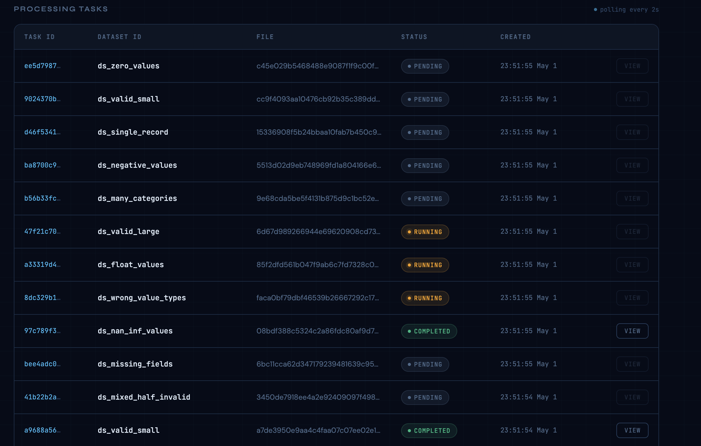
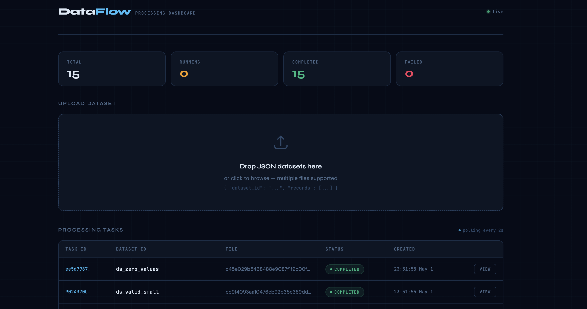

FastAPI API
Accepts multipart JSON uploads, validates schema and file size, saves files, creates task rows, and returns immediately.
Software / Systems
Data Processing Web System is a containerized platform for uploading JSON datasets, dispatching long-running processing jobs to background workers, and tracking task state without blocking the API.
The implementation emphasizes system design: queue-backed concurrency, explicit status transitions, shared upload storage, PostgreSQL-backed task state, worker scaling, and failure-aware Celery configuration.
Architecture
The system separates request handling from compute work. FastAPI validates uploads and creates a task row, Redis brokers job messages, Celery workers process files from a shared Docker volume, and PostgreSQL records every state transition.
Accepts multipart JSON uploads, validates schema and file size, saves files, creates task rows, and returns immediately.
Decouples request traffic from processing work and lets jobs move across multiple worker containers.
Run long-lived dataset validation and aggregation jobs with explicit PENDING, RUNNING, COMPLETED, and FAILED states.
Stores concurrent worker writes safely with UUID task IDs and JSON result payloads.
Reliability
Celery uses late acknowledgements and rejects work on worker loss, so a task is not removed from the queue until processing finishes successfully.
The worker prefetch multiplier is set to one, preventing a single worker slot from reserving excess jobs while other slots are idle.
Worker processes use a per-process SQLAlchemy engine with pool_size=1 and max_overflow=0 to avoid exhausting PostgreSQL connections under scaled concurrency.
The API writes uploaded files before enqueueing jobs, and both API and worker containers mount the same upload volume so workers can always read the saved file.
Interface

Users can upload datasets and monitor task state as workers move jobs through the processing pipeline.

Uploads are validated before task creation, which prevents malformed jobs from entering the queue.

Completed jobs expose computed statistics and error details through persisted PostgreSQL task records.